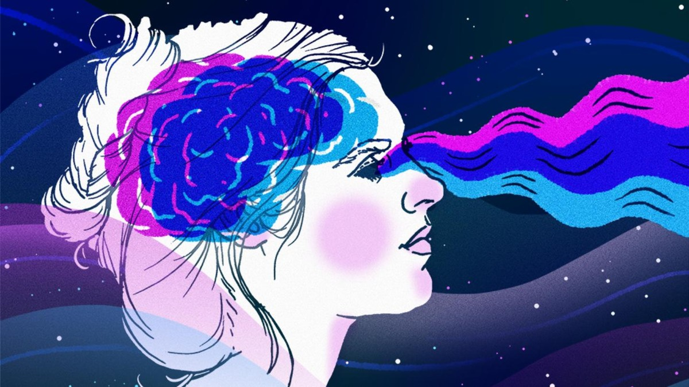

|
Son historias que nuestra mente crea al momento de dormir, los sueños se han
considerado como una actividad SUBJETIVA, también son una fuente de MISTERIO contínuo para los
científicos. Se llegan a interpretar de muchas formas. Esta actividad nos permíte
"desahogarnos" de una manera inconciente, interpretando nuestros pensamientos de una manera
subrealista o en algunos casos con pensamientos abstractos. Los sueños dependen de las
experiencias vividas por la persona, también existen las pesadillas que hacen que la persona
se sienta, incómoda y amenazada. |
 |
|---|
El ¿por qué? de los sueños, no se sabe con certeza aún, solo existen unas cuantas teorías sobre ello.
Hay posibles explicaciones para ello... y estás son las posibilidades:
Representan deseos y anhelos inconscientes.
Interpretan señales que da el cerebro y el cuerpo durante el sueño dependiendo de sus necesidades.
Consolidan y procesan la información que recopilamos durante el día.
Funcionan como una forma de PSICOTERAPIA.
En el afán de entender el significado de los sueños, se han creado “manuales” de interpretación
que no ofrecen una ayuda real para quien se siente preocupado por comprender algún sueño recurrente, ya que cada uno tiene que ver sólo con quien lo experimenta y
con lo que vive. El ser humano está convencido de que los sueños algo nos tienen que decir o que a través de ellos podemos encontrar respuestas a la incertidumbre.
Cada uno tiene su propio significado según lo que sucede en esos momentos en nuestros pensamientos.
1 /
2 /
3
|
|---|